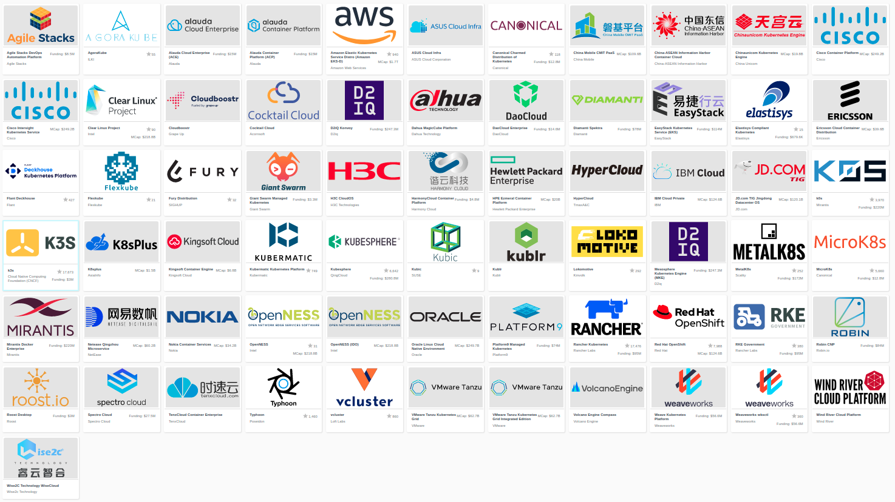

Conformance Testing the Kubernetes API
Tooling that Makes the Difference
Stephen Heywood & Caleb Woodbine, ii.nz
About ii
Technical Folks in New Zealand
People
- Brenda Peel
- Caleb Woodbine
- Hippie Hacker
- Riaan Kleinhans
- Stephen Heywood
- Zach Mandeville
Kubernetes Conformance
and it’s tooling
What is Kubernetes Conformance?
CNCF Kubernetes Conformance ensures
… that every vendor’s version of Kubernetes supports the required APIs, as do open source community versions
Why is Kubernetes Conformance important?
- portability of workloads
- stable APIs behave the same everywhere
- freedom from vendor lock-in
- consistency with APIs
Conformance website

Who can meet your k8spectations?
Currently, there are 67 certified distributions.

Click Certified K8s/KCSP/KTP link on the left
k8s-conformance repo
https://github.com/cncf/k8s-conformance

Conformance as Code
- defined through the API and a test suite
- allows for tools to be built that fit within k8s workflows
- two examples: Sonobuoy and APISnoop
Certifying Distributions with Sonobuoy
Deploy Sonobuoy
Build sonobuoy
go get -u -v github.com/vmware-tanzu/sonobuoy@latest
deploy to your cluster
sonobuoy run --mode=certified-conformance
TODO rerun full suite of Sonobuoy, outputting the full number of tests run :: View test logs
sonobuoy logs

Check if sonobuoy is done
Check status, and look for complete
sonobuoy status

Get Results
outfile=$(sonobuoy retrieve)
mkdir ./results; tar xzf $outfile -C ./results
./results/global
./results/global/junit_01.xml
./results/global/e2e.log
Submit PR
- fork k8s conformance repo and open PR
- In PR, include output logs and a product.yaml file
- Complete instructions at github.com/cncf/k8s-conformance
Example Pull Request

Files Changed

Tooling that makes the difference
Goals
APISnoop is designed to help:
- Identify gaps in coverage
- Close these gaps with tests
- Prevent new gaps from happening
Identifying Gaps
apisnoop.cncf.io

apisnoop.cncf.io

Taking Snoop for a test drive in kind
Launching
git clone https://github.com/cncf/apisnoop
cd apisnoop/kind
kind create cluster --image kindest/node:v1.22.1 --config kind+apisnoop.yaml
Creating cluster "kind" ... • Ensuring node image (kindest/node:v1.22.1) 🖼 ... ✓ Ensuring node image (kindest/node:v1.22.1) 🖼 • Preparing nodes 📦 📦 ... ✓ Preparing nodes 📦 📦 • Writing configuration 📜 ... ✓ Writing configuration 📜 • Starting control-plane 🕹️ ... ✓ Starting control-plane 🕹️ • Installing CNI 🔌 ... ✓ Installing CNI 🔌 • Installing StorageClass 💾 ... ✓ Installing StorageClass 💾 • Joining worker nodes 🚜 ... ✓ Joining worker nodes 🚜 Set kubectl context to "kind-kind" You can now use your cluster with: kubectl cluster-info --context kind-kind Have a nice day! 👋
Discovering untested endpoints
export HOST="${HOST:-localhost}"
psql -U apisnoop -d apisnoop -h $HOST -c "
SELECT
endpoint,
kind
FROM testing.untested_stable_endpoint
WHERE
eligible is true
AND
category = 'core'
ORDER BY
kind, endpoint desc
LIMIT 5;"
endpoint | kind
--------------------------------------+------------
createcorev1namespacedpodbinding | binding
createcorev1namespacedbinding | binding
replacecorev1namespacedevent | event
patchcorev1namespacedlimitrange | limitrange
listcorev1limitrangeforallnamespaces | limitrange
(5 rows)
an example (1/2)
create a namespace
kubectl create ns kubecon-na-2021
namespace/kubecon-na-2021 created
an example (2/2)
snooping on your own cluster, with psql!
export HOST="${HOST:-localHOST}"
psql -u apisnoop -d apisnoop -h $HOST -c "
select distinct endpoint
from testing.audit_event
where endpoint ilike 'space%'
and useragent like 'kubectl/v1.2%'
order by endpoint;"
endpoint
-----------------------------
createcorev1namespace
listcorev1namespacedservice
(2 rows)
Why is this important?
- find the endpoints that your workloads use
- discover if you are relying on alpha or beta features
Closing gaps in Kubernetes Conformance Coverage
Demo for an entrypoint of test writing
A special thanks to
- any contributors who’ve made GA endpoints
- all conformance contributors and community members that’ve helped get us to ~77% (to date)
Thanks to these projects for powering this talk
- APISnoop (SnoopDB + Auditlogger)
- Cert-Manager
- Chromium
- External-DNS
- Humacs
- Kind
- Kubernetes
- Linux
- OBS
- Pair
- PowerDNS
- Reveal.js
- Systemd
- go-http-server
- nginx-ingress
- tmate
Get in contact
- Slack: #k8s-conformance (Kubernetes Conformance Working Group)
- Mailing list: kubernetes-sig-architecture@googlegroups.com